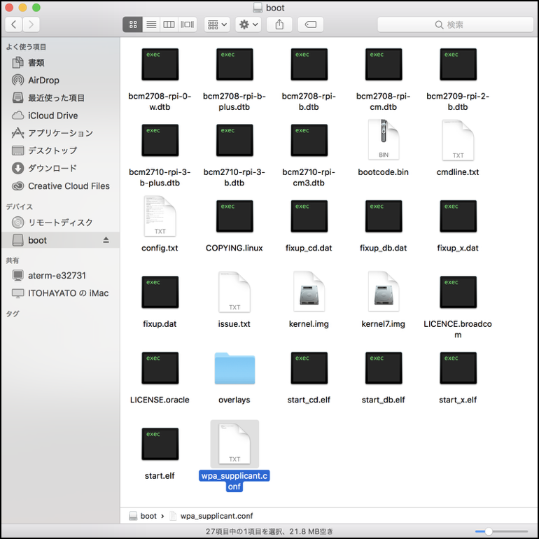
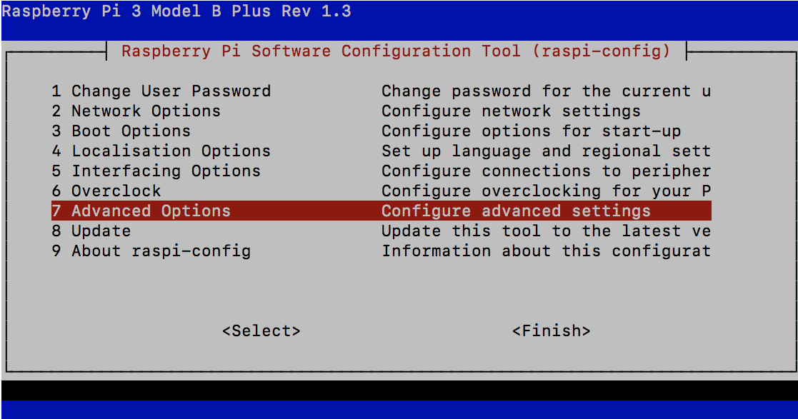
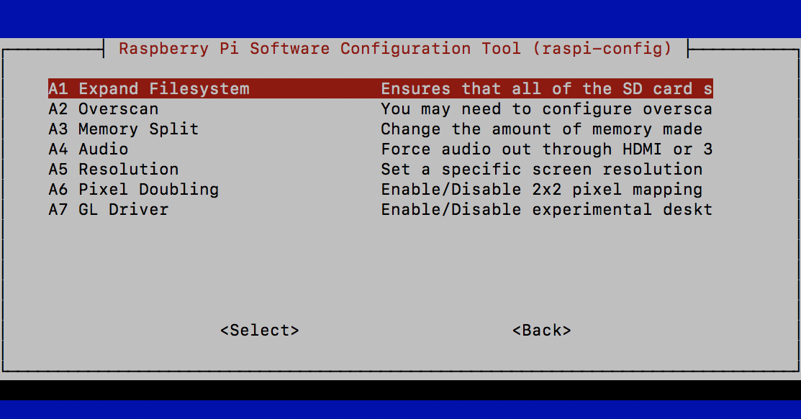

RaspPi3用のイメージ作成
Imageの作成
RaspPi3B,B+用SDカードのイメージ https://drive.google.com/open?id=1vr4nEXLEh4xByKAXik8KhK3o-XWgo2fQ よりRaspberryPi 3用のイメージをダウンロードしてくる。
donkey_2.5.0_pi3.zipを解凍してできた、donkey_2.5.0_pi3.img をSDカードに焼き込む。
焼き込みには、Etcherを使う。 https://www.balena.io/etcher/

Wifiの設定
作成したSDカードをPCで開き、wpa_supplicant.confを作成します。

wpa_supplicant.confに、接続先のssid, password(psk)を記載します。
1 2 3 4 5 6 7 8 | country=US
ctrl_interface=DIR=/var/run/wpa_supplicant GROUP=netdev
update_config=1
network={
ssid="<your network name>"
psk="<your password>"
}
|
ステルスモードの場合
1 2 3 4 5 6 7 8 9 | country=US
ctrl_interface=DIR=/var/run/wpa_supplicant GROUP=netdev
update_config=1
network={
ssid="<your network name>"
scan_ssid=1
psk="<your password>"
}
|
RaspberryPi起動時に、wpa_supplicant.confが、/etc/wpa_supplicant/wpa_supplicant.confにコピーされ、Wifiに接続されます。
IPアドレスの検索
初期のイメージでは、RaspberryPiのHost名は、donkeypiになっています。PCとRaspberryPiが同一ネットワーク内に存在するのなら、Host名で接続することが可能です。
1 | ssh pi@donkeypi.local |
passwordは、raspberryでログインできます。
| 項目 | 内容 |
|---|---|
| ID | pi |
| PASS | raspberry |
/etc/hostnameの修正
自分のDonkeyCarが、他人と同じHost名にならないように、Host名を変更します。
1 | sudo vi /etc/hostname |
/etc/hostname
1 | donkeypi-akira |
/etc/hostsの修正
自分のDonkeyCarが、他人と同じHost名にならないように、Host名を変更します。
1 | sudo vi /etc/hosts |
/etc/hosts
1 2 3 4 5 6 | 127.0.0.1 localhost ::1 localhost ip6-localhost ip6-loopback ff02::1 ip6-allnodes ff02::2 ip6-allrouters 127.0.1.1 donkeypi-akira |
Host名を変更したらRaspberryPi3をRebootします。
1 | sudo reboot |
再起動後、変更したHost名であるdonkeypi-akiraで発見できるようになります。
1 | ssh pi@donkeypi-akira.local |
Host名は、名前をかぶらないように気をつけてください。
DonkeyCarのインストール
SDカード容量を増やす
RaspberryPi3のConfigを起動します。
1 | sudo raspi-config |



dfコマンドでファイルの空き容量を確認します。
1 2 3 4 5 6 7 8 9 10 | df Filesystem 1K-blocks Used Available Use% Mounted on /dev/root 29712700 1968580 26519276 7% / devtmpfs 443728 0 443728 0% /dev tmpfs 448336 0 448336 0% /dev/shm tmpfs 448336 11596 436740 3% /run tmpfs 5120 4 5116 1% /run/lock tmpfs 448336 0 448336 0% /sys/fs/cgroup /dev/mmcblk0p1 43436 22141 21295 51% /boot tmpfs 89664 0 89664 0% /run/user/1000 |
DonkeyCarのUpdate
DonkeyCarをUpdadeします。
1 2 3 4 | pip install donkeycar[pi] python -c "import donkeycar as dk; print(dk.__version__)" using donkey v2.5.8 ... 2.5.8 |
TensorFlowのUpdate
Google Colabでの学習に対応するために、RaspberryPi側も、TensorFlow 1.12.0, Keras 2.2.4にUpdateします。
| Package | Version |
|---|---|
| TensorFlow | 1.12.0 |
| Keras-Applications | 1.0.6 |
| Keras-Preprocessing | 1.0.5 |
TensorFlow 1.12.0をインストールします。
1 | wget https://github.com/lhelontra/tensorflow-on-arm/releases/download/v1.12.0/tensorflow-1.12.0-cp35-none-linux_armv7l.whl |
1 | pip install tensorflow-1.12.0-cp35-none-linux_armv7l.whl |
pip listでインストールしたVersionを確認します。
1 2 3 4 | pip list | grep -i -e keras -e tensorflow Keras-Applications 1.0.7 Keras-Preprocessing 1.0.9 tensorflow 1.12.0 |